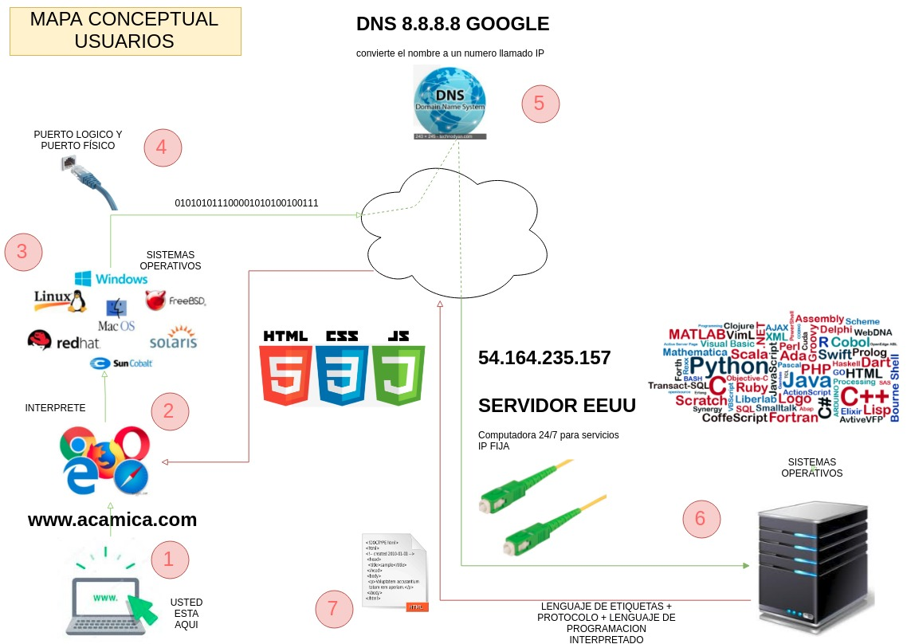

Este primer mapa nos enseña como viaja la información al solicitar un recurso de la web (por ejemplo, la pagina www.acamica.com.ar).
PASO 1: La url
protocolo://servidor:puerto/directorio/pagina
- Protocolo: es el formato en el que se van a intercambiar los datos nuestro navegador y la máquina de destino. Existen diferentes protocolos, dependiendo del contenido que queramos intercambiar. Así, por ejemplo, el http (hypertext transfer protocol) es para la visualización de páginas web, ftp (file transfer protocol) para transferir fichero, mail para transmitir correos electrónicos...
- servidor: es el nombre de la máquina destino. Este se compone de dos partes. El nombre del servidor y el dominio. Ejemplos de nombre de servidor serían: www.yahoo.com, www.google.com, ayudaenlaweb.blogspot.com, www.manualweb.net
- Nombre del servidor, es el nombre que se le haya dado a la máquina. Suele ser representativo del sitio al que estamos accediendo. Por ejemplo, google, yahoo, flickr, youtube,
- Dominio de nivel superior, serían las ultimas tres letras del nombre del servidor. Son muy reconocibles y las más normales son .com, .net y .org. Aunque hay muchas variantes, .tv, .mil,… incluso asociadas a zonas geográficas .es, .fr, .uk
- Subdominio, se usa cuando queremos que una misma máquina atienda a varios nombres. Se antepone delante del nombre de la máquina. Por ejemplo, nuestro nombre de servidor tiene subdominio, ayudaenlaweb. Siendo blogspot el nombre de la máquina y .com el dominio de nivel superior.Suele existir uno por defecto que es el www. Y hay otros que se suelen usar como “estándares” como el ftp
- Puerto: es un número y corresponde a un punto específico de entrada a la máquina. Suele ir asociado al protocolo, es decir, al usar un protocolo, por defecto se le asigna un número de puerto. Así el protocolo http suele usar el puerto 80. Es por ello que no se especifica al poner la URL. Incluso, algunos navegadores, al ponerlo en la URL, lo ocultan. Otros puertos son el 21 para el ftp,…
- Directorio, esto es igual que los directorios de los sistemas operativos. Es decir, las carpetas de Windows. Nos sirve para organizar las páginas que tenemos en el servidor y su estructura es jerárquica. Podemos anidar unos directorios en otros.
- Página, representa a la página web en concreto y es la que tiene el contenido en cuestión.
https://www.acamica.com/full-stack-online:443
- Protocolo: https
- Servidor: acamica.com
- Nombre del servidor: acamica
- Dominio de nivel superior: .com
- Subdominio: no posee
- Puerto: 443
- Directorio: /
- Página: index.html
PASO 2: Navegador
- Internet explorer
- Chrome
- Firefox
- Opera
- Otros...
PASO 3: El Sistema Operativo
NAVEGADORES
- 0
- 1
- https://www.youtube.com/watch?v=vs_aum0V_yA
PASO 4: La información fuera de la pc
PASO 5: DNS
PASO 6: SERVIDORES
PASO 7: Retorno de la información
cableado
servidores
https://www.youtube.com/watch?v=XZmGGAbHqa0